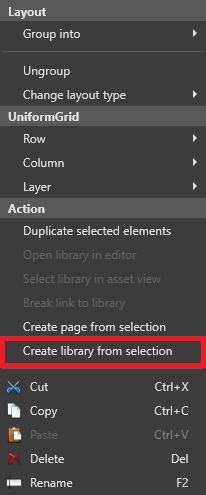

UI ライブラリ
初級 アーティスト デザイナー
UI ライブラリには、グリッド、ボタン、スライダーなどの UI エレメントが含まれており、UI ページで利用・再利用することができます。
Stride プロジェクトは、UI エレメントの標準ライブラリが含まれています。 カスタムエレメントを使って、独自のライブラリを作ることもできます。

UI ライブラリは、シーンエディターのプレハブに似ています。独自のエレメントを作成し、カスタム UI ライブラリに保存し、複数の UI ページで必要なところに使用することができます。また、入れ子になったプレハブのように、他のライブラリの中にライブラリを入れ子にすることもできます。
実行時に、UI ライブラリのルートを再構築して、既存の UI ツリーに挿入することもできます。
UI ライブラリを作成する
アセットビューで、[Add asset] > [UI] > [UI library] をクリックします。

Game Studio は、UI ライブラリをアセットビューに追加します。

また、既成の UI 要素から UI ライブラリを作成することもできます。
UI ライブラリを作成する基にしたい要素を選択します。
右クリックして、[Create library from selection] を選択します。

Game Studio は、選択された要素のコピーし、ライブラリを作成します。
UI ライブラリをコードで割り当てる
// このプロパティは、Game Studio の UI ライブラリアセットから割り当てることができます。
// This property can be assigned from a UI library asset in Game Studio
public UILibrary MyLibrary { get; set; }
public Button CreateButton()
{
// "MyButton" という名前の Button 型（または Button から派生した型）のルート要素があると仮定します。
// assuming there is a root element named "MyButton" of type (or derived from) Button
var button = MyLibrary.InstantiateElement<Button>("MyButton");
// "MyButton" という名前のルートがライブラリに存在しない場合、あるいは型が一致しない場合は、
// 前述のメソッドは null を返します。
// if there is no root named "MyButton" in the library or the type does not match,
// the previous method will return null
if (button != null)
{
// Click イベントにデリゲートを登録します。
// attach a delegate to the Click event
button.Click += delegate
{
// ここで何かの作業をします。
// do something here...
};
}
return button;
}
UI ページには、ルート要素が 1 つかありません。 UI ライブラリは、複数のルート要素を持つことができます。